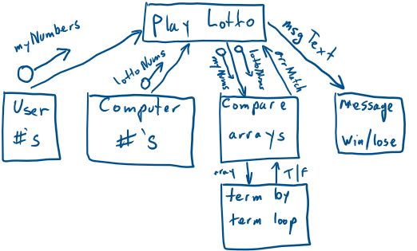

![20-Py-L0tt001 -checkArrayComparision,py -
Python 3.70 Shell
File Edit Shell Debug Options
Window Help
x
File Edit Format
import
random
myNumbe s
t "Nums
t 'Nums
lottoNums . sort
Run
10,
10,
Options Window Help
18,
26,
26,
30,
30,
Python 3.7. O ( '73.
93, 27 2018,
SC v. 1914 €4 bit
win 32
Type "copyright n
7.0 : 1bf9CCSO
(AMD64)) on
"credits" o
. append (zandom. zandi
. append (zandom. zandin
. append ( random. (
. append (random. (
. append ( ( , 4 )
. append ( random. ( , 40)
(2,40))
40))
"license " for more inform
acxon.
RESTART: C:
rive — NSW Department of Educ
c ion and
print (lottoNums)
i f myNumEers
print ( "You
princ ( "You
lottoNums :
won!
didn't win"
checkArrayComparision. py
10, 18, 26, 30, 35]
won !
You
>>>](images/plan01/clip_image003.jpg)
V1 Lotto - get the array matching working
The original Lotto problem is more detailed, but as this is VERSION 1, our problem is much more limited.
Stages of the planning process are:
1. Defining the problem - Business need:
2. Planning and Designing the solution:
5. Maintaining:
(Note: this page is copied from a school OneNote file and some links below may not work)
Features of this version:
· Brute force, repetitive code to just "get it working"
· JUST 1 DRAW when the problem states 1,000 draws
· Use of 1 dimensional arrays of integers
· Use of the IF / ELSE control structure
· Use of the FOR / NEXT control structure (pre-test loop)
· HARD CODING of variable values for testing of the "array match" module
· Use of RANDOM number function
o In PASCAL, the function will return the same numbers each time
· Thorough TESTING of the array handling
o JavaScript loads the computer array as text values
· No VALIDATION - this code can easily be broken with the entry of text values
· Limited "maintainability" for possible changes in the number of balls in a Lotto draw
· Limited "re-usability" for possible changes in the number of balls in a Lotto draw
JavaScript code is visible on GitHub at: https://github.com/bwattle/20-Lotto
Web pages are visible here: https://bwattle.github.io/20-Lotto/.
Pseudocode conventions:
· Assume: PRINT("message") is either:
· Displays a command line
· Loads a text box
· Triggers a pop-up message box
· Assume: randomlnt(low,high) returns a random integer between low and high inclusive.
· Assume: sort(array)sorts from smallest to biggest
Pseudo V1: (1 game - check the array comparison - true/false case)
(use commenting to test both cases)
BEGIN lotto
myNumbers = [8, 10, 18, 26, 30, 35] // hard code
\\ lottoNums = [8, 10, 18, 26, 30, 35] // for TRUE test
n1 = randomInt(1, 40)
n2 = randomInt(1, 40)
n3 = randomInt(1, 40)
n4 = randomInt(1, 40)
n5 = randomInt(1, 40)
n6 = randomInt(1, 40)
lottoNums = [n1, n2, n3, n4, n5, n6]
//lottoNums = [n1, n2, n3, n4, n5, n6] //for FALSE test
IF myNumbers = lottoNums THEN //term by term in some languages
PRINT("You win!")
ELSE
PRINT("You lose!")
ENDIF
END lotto
We will combine the "Structured Approach" with the "Prototype approach"
approach and complete this cycle many times:
1. Defining the problem - Business need:
o For 6 "hard coded" numbers between 1 and 40 inclusive, the programme will:
o There will be an identical set of numbers for testing the array comparison module (or sub-routine)
o Generate 1 set of 6 random numbers between 1 and 40 inclusive
o Match the 6 hard coded #'s with
· identical array - TRUE case
· the random number array - FALSE case
· state message, either:
§ "You won"
§ "You didn't win"
2. IPO chart to analyse the problem
|
INPUT |
PROCESS |
OUTPUT |
|
My #'s |
Hard coded |
String output - user (a,b,c,d,e,f) |
|
Identical #'s |
Hard coded |
String output - computer (a,b,c,d,e,f) |
|
No1
No2
No3
No4
No5
No6 |
Add the 6 ascending "hard coded" numbers to an array and compare them with another array of 6 computer generated random numbers
(this is basic because it is version 1) |
String output - computer (a,b,c,d,e,f)
Print (display)
"You win" or
"You lose" |
2. Planning and Designing the solution:
o Processing Steps:
o Declare the "myNumbers" array and assign 6 values
o Declare the "lottoNums" array and assign 6 values
o Compare the 2 arrays
o Display win/lose message
2. Break into modules if possible
o User 6 numbers into myNumbers array
o Computer 6 numbers into lottoNums array
o Compare arrays
o Display message
3. Variables:
DATA DICTIONARY Data dictionary: example here: Data Dictionary - versions
|
Variable |
Data
Type |
Entry
Calculation
Constant? |
Size
Bytes |
Description of Variable |
Example |
|
User No
1 .. 6 |
Integer |
Hard coded |
2 |
Whole number |
31 |
|
Computer No1 .. 6 |
Integer |
Random generation |
2 |
Whole number |
24 |
|
myNumbers |
Array(6 integers) |
Loaded by computer |
12 |
6 element array |
(6, 5, 3, 1, 8, 7) |
|
lottoNums |
Array(6 integers) |
Loaded by computer |
12 |
6 element array |
(7, 9, 13, 11, 28, 17) |
|
arrMatch |
Boolean |
Calculated |
1 bit |
Match y/n |
True/False |
|
arrAsText |
String |
Calculated |
Huge |
Block of text with () , and numbers and line breaks for display in text box |
(7, 9, 13, 11, 28, 17)
(7, 9, 13, 11, 28, 17) |
|
|
|
|
|
|
|
Form objects:
OBJECT DICTIONARY
|
Control
Name |
Data
Type |
Object
Type |
Size for display |
Description |
|
txtU1..6 |
Integer |
6 Text boxs |
4 |
Enter 2 digit # |
|
txtC1..6 |
Integer |
6 Text boxs |
4 |
Enter 2 digit # |
|
txtMatchMsg |
String |
Text box |
35 cols x 1 row |
Win/lose message |
|
txtArrayList |
String |
List box |
35 cols x 10 rows |
Display up to 1000 arrays of random numbers |
|
btnLottoDraw |
Click event |
Button |
35 cols x 1 row |
Click for a draw |
d. System modelling tools for the Algorithms:
i. Flow Chart - table below from P116 of the text
b. Pseudocode:
BEGIN
READ No1
READ No2
READ No3
Total = No1 + No2 + No3
DISPLAY Total
END
Code in Pascal, Python, VB and JavaScript - preferably all 4!
iii. Desk checks and walk throughs to test the algorithm
|
Statement |
Test1 |
Test2 |
Test3 |
|
READ No1 |
2 |
5 |
|
|
READ No2 |
5 |
89 |
|
|
READ No3 |
7 |
5643 |
|
|
Total = No1 + No2 + No3 |
2+5+7=14 |
5+89+5643 = 5737 |
|
|
DISPLAY Total |
14 |
5737 |
|
iv. Structure Charts: - modules or sub-routines

v. Metalanguage descriptions definitions here: EBNF & Railroad
Examples here: Syntax in 3 languages
Related to this project:
iii. JS EBNF and Railroad
iii. Implementation (Building):
Python - True case
Python - False case - sort not working!
![20-Py-Lott001-checkArrayCcmparision.py -
File Edit Format Run Options Window Help
and om
imp a ZZ
PBhon 3.7.0 Shell
File Edit Shell Debug Options
Window Help
x
myNumEers —
occoNums —
(8,
loc coNums —
loccoNums . sort
10, 18,
10, as,
2€, 30,
26, 30,
35 |
loccoNums . append (random. randinc (1,
loc coNums . append (random. randinc ( 1,
loc coNums . append (random. randinc ( I,
loccoNums . append (random. randinc ( 1,
1 occoNums . append (random. randint ( 1,
1 occoNums . append (random. randint (1,
print (lottoNums)
myNumhers lottoNums:
("You won! " )
else:
("You win")
40) )
40))
40) )
40) )
40))
40))
rive — NSW Department of Educ
ation and
001 — s on. py
(8, 10, 18, 26, 30, 35)
You won!
>>>
RESTART: C:
rive — NSW Department of Educ
acion and
001 — che s on. py
131, 24, 35, 8, 38, 341
You didn't win
Ln: 11
Col: 4](images/plan01/clip_image005.jpg)
Pascal - syntax error caused by the word "don't" - Why?
![lotto numbers 6
Random
Writeln( 'The lotto numbers
Coun
n a ses
48
are: •i;
e n counter to
28 E
art-match
True;
art-Size Do
counter
Begin {Pre- Test Loop now compiling string}
Writeln (lotto_numbers counter J) ;
If my _ numbersccounter)
lotto_nunbersC counter] Then art-match
counter
counter + I; {Incre•ent counter}
If am—match Then Writeln 'You won')
Else "riteln( • Vcu didn' win');
//ELse Wrzteln 'You did not Win ' ) ;
Writeln( •your original numbers are: •
Fal se;
x
Virtual Pascal - Compilatk»n failure
Error atine 34 - column 26
34 (26) Error 89: expected
A does not it](images/plan01/clip_image006.png)
Pascal - True case - note that the 6 loops did NOT return a FALSE!
![input
output)
Program Lotto
{used as a demo of pseudo, EBNF and Railroad}
; {a Library necessary for random numbers and other functions}
Uses crt
Const {for GLOBAL constants}
art-Size
6; {a GLobaL variable for the Length of ALL arrays}
Type {both the user array and the random array can have this format}
arrLotto = Array Cl.. art-size] Of
Var {declare variables here}
numbers
arrLotto =
lotto numbers
art-Lotta -
// Lotto_numbers :
arrLotto;
Integer; {with Python,
counter
Integer;
{test # 's for matching}
this can 't be done Loops}
Boolean; {with Python, arrays have to be compared term by term!}
Natch
Begin {main}
14 E
Clrscr; {clear the screen after previous operations}
{Randomize; {if this Line is not included, the randoms WILL repeat the same way each run}
{ Lotto_numbers I j
{ Lotto_ numbers 2}
{ Lotto_ n umbers 3}
Lotto _ numbers
Lotto_ numbers 5}
L o t to_ numbers 6}
{"Random" starts at e which we don 't want}
{Python "append" is complex, so enter each element manuaLLy}
Ran dom (4 e ) +1 ;
Ran dom (4 e +1 ;
Ran don (43 ) +1 ;
Ran don (43 ) +1; }
Writeln( 'The lotto numbers are: '
counter
Natch
I; {InitiaLises the print counter to I}
True;
While counter
art-Size Do
27 E
Begin {Pre-rest Loop now compiling string}
Writeln ( lotto_numbers counter] ) ,
If my _ numbers C counte
lotto_numbersccounter] Then art-match
counter
counter + I; { Increment counter}
False;
If art-match Then Writeln 'You won '
/ / Else 'Vou didn 't win 'j;
Writeln( 'You did not win');
Else
Writeln( 'Your original numbers are:
roblem code commented out
NSW Department of Education and „
The lotto numbers are:
IYou won
Your original
numbers
are:
(6,
5,
1,
8,
7)](images/plan01/clip_image008.jpg)
Pascal - False case - all loops would return FALSE:
![input
output)
Program Lotto
{used as a demo of pseudo, EBNF and Railroad}
; {a Library necessary for random numbers and other functions}
Uses crt
Const {for GLOBAL constants}
art-Size
6; {a GLobaL variable for the Length of ALL arrays}
Type {both the user array and the random array can have this format}
arrLotto = Array Cl.. art-size] Of
Var {declare variables here}
my _ numbers
arrLotto =
arrLotto = (6,
// L otto_numbers :
lotto numbers
arrLotto;
Integer; {with Python,
counter
Boolean; {with Python,
Natch
Begin {main}
14 E
Clrscr•
c Lear the screen a ter
Randomize; {if this Line is not
Integer;
{test # 's for matching}
this can 't be done Loops}
arrays have to be compared term by term! }
re v Ious
included,
rations
the randoms WILL repeat the same way each run}
lotto_numbers ]
lotto_numbers C 2 ]
lotto_numbersC3]
lotto_numbers C 4]
lotto_numbers C 5 ]
lotto_numbersC6]
Random (4B) *I;
Random (4B) +1;
Random (4B) +1;
Random (48) +1;
Random (48) +1;
Random (48) +1;
{"Random" starts at e which we don't want}
{Python "append" is complex, so enter each element manuaLLy}
Writeln( 'The lotto numbers are: '
counter
I; {InitiaLises the print counter to I}
True;
While counter
art-Size Do
27 E
Begin {Pre-rest Loop now compiling string}
Writeln ( lotto_numbers C counter] ) ,
If my _ numbers C counte
lotto_numbersccounter] Then art-match
False;
counter
counter + I; { Increment counter}
atch Then Writeln( 'You won ' )
If arrm
// EL se WriteLn( 'Vou
Else Writeln 'You did
Writeln( 'Your or-131 na
he lotto numbers are:
You did not win
Your original numbers
didn 't win 'D;
not win'
num ers are:
NSW Department of Education and
are:
(6,
5,
3,
1,
8,
7)](images/plan01/clip_image010.jpg)
Pascal - additional FALSE to check random numbers are different:
![Program Lotto (input, output)
{used c demo Of pseudo, EB%F and Raf L road}
c n; and Other functions}
Const {for GLOBAL
arrSize = 6; {o G'otat variable for the Length of
Type {both the user arroy and the nandom array can have this format}
arrLotto = Array arrSize) Of
Var {declare variables here}
my_numbers
arrLotto =
arrLotto = (6,
lotto numbers
arrLotto;
counter : Integer; {with Python,
Boolean; Python,
Begin }
Integer ;
{test # •s for notching}
this can 't be done without Loops}
have be compared term by
Cir-SC r ; the Screen previous operations}
Randomize; {if Line is not included, the randoms repeat the way each run}
= Random (4B)
lotto_numbersCIl
= Random (48)
lotto_numbersC21
: = Random (4B)
lotto_numbersC31
= Random (4B)
lotto_numbersC4J .
: = Random (4B)
lotto_numbersCSJ
: = Random (40
lotto_n umbers C 6]
+1; {"Random" 5tart5 at e which we don't want}
+1; {Python "append" is co,mpLex, so enter each element manually}
WriteIn('The lotto nunbers are:
counter
I; t InitiaLises the
True;
While Counter < • DO
print counter to I}
Begin {Pre- Test Coop now
Writeln( lotto_numbersC counter)) ;
If Then art-match
counter
- counter + I; {Increment counter}
If art-match Then "riteln( •you won')
/ / Else didn 't win •j;
Else "riteln( •you did not win');
Writeln( 'Your original numbers are: •
- NSW Department of Education and „
- False;
o
x
The lotto numbers are:
ou did not win
our Original numbers are.
5,
8,
7)](images/plan01/clip_image012.jpg)
VB True case
![x
—public Class
Form I
Forml
lottoNums
Dim
Dim
Dim
Dim
Dim
Dim
Dim
Dim
Dim
Dim
Dim
Dim
Dim
Dim
Dim
myNumbers (6)
lottoNums =
myNumberI As
myNumber2 As
myNumber3 As
As
myNumber5 As
myNumber6 As
As
Int16
Int16
Int16
Int16
Int16
'arra for user numbers
'test true values
'temporam,' ru ti
riables
Computer numbers for "true" test
lottoNumbersI As
Int16
lottoNumbers2 As
Int16
lottoNumbers3 As
Int16
lottoNumbers4 As
Int16
lottoNumbers5 As
Int16
lottoNumbers6 As
Int16
'temporam,' multiple variables
art-match As Boolean
'for now in VB, we will compare the arrays term by term
arrAsText As String 'this will build up for display in the text box
19
26
31
32
35
39
-
-
-
-
-
-
Private Sub As Object, e As EventArgs) Handles btnDraw.CIick
myNumberI
myNumber2 =
myNumber3 =
myNumber5 =
myNumber6 —
myNumbers —
Nums =
txtLlI.Text ' read the values in the user text boxes
txtL12. Text
txtL13. Text
txtL14. Text
txtL15. Text
txtL16. Text
{myUum
"false" values are commented out
m er2, myNumber3,
myNumbetu;, myNumber5, myNumber6} ' load to array
{7, 9, 13, 11, 28, 17} 'test false values
art-match = True
arrAsText = lottoNums (e)
For i To 5
' iterate through the arrays for matching and string creation
If myNumbers (i) < > lottoNums (i) Then
art-match =
End If
If i > Then
arrAsText =
End If
If art-match Then
False
arrAsText &
' & lottoNums (i)
txtmatc hmsg. Text
Else
txtmatc hmsg. Text
— "You win!"
"You didn't win!"
End If
txtCI. Text —
txtC2. Text =
txtC3. Text =
txtC4. Text =
txtC5. Text =
txtC6. Text —
txtArrayList.
End Sub
End Class
lottoNums (e) ' load up the text boxes
lottoNums (I)
lottoNums (2)
lottoNums ( 3 )
lottoNums (4 )
lottoNums ( 5 )
Text = arrAsText
' random '
with the computer #](images/plan01/clip_image014.jpg)
Form view - not sure of the best form layout yet!
VB False case - random numbers added in:
![—public Class
Form I
Dim
Dim
Dim
Dim
Dim
Dim
Dim
Dim
Dim
Dim
Dim
Dim
Dim
Dim
Dim
Dim
myNumbers (6) As
'array for user numbers
Int16
lottoNums = New
{6, 5, 3, I, 8, 7} 'test true values
Int16
myNumberI As
'temporam,' multiple variables
Int16
myNumber2 As
Int16
myNumber3 As
Int16
As
Int16
myNumber5 As
Int16
myNumber6 As
Int16
lottoNumbersI As
Int16
lottoNumbers2 As
Int16
lottoNumbers3 As
Int16
lottoNumbers4 As
Int16
lottoNumbers5 As
Int16
lottoNumbers6 As
Int16
'temporam,' multiple variables
art-match As Boolean
'for now in VB, we will compare the arrays term by term
arrAsText As String 'this will build up for display in the text box
19
26
29 /
37
38
41
45
-
-
-
-
-
-
Private Sub As Object, e As EventArgs) Handles btnDraw.CIick
myNumberI
myNumber2 =
myNumber3 =
myNumber5 =
myNumber6 —
myNumbers =
lottoNums
lottoNums (e)
lottoNums (I)
lottoNums (2)
lottoNums (3)
lottoNums (4)
lottoNums ( 5 )
txtLlI.Text ' read the values in the user text boxes
txtL12. Text
txtL13. Text
txtL14. Text
txtL15. Text
txtL16. Text
{myNumberI, myNumber2, myNumber3,
myNumbetu;, myNumber5, myNumber6} ' load to array
{7, 9, 13, 11, 28, 17}
math . Ceiling(Rnd C)
math . Ceiling(Rnd C)
math . Ceiling(Rnd C)
math . Ceiling(Rnd C)
math. ) *
art-match = True
arrAsText = lottoNums (e)
For i To 5
' iterate through the
If myNumbers (i) < > lottoNums(i)
art-match =
End If
If i > Then
arrAsText =
End If
If art-match Then
False
arrAsText &
'test false values
arrays for matching and string creation
Then
' & lottoNums (i)
txtmatc hmsg. Text
Else
txtmatc hmsg. Text
— "You win!"
"You didn't win!"
End If
txtCI. Text —
txtC2. Text =
txtC3. Text =
txtC4. Text =
txtC5. Text =
txtC6. Text
txtArrayList.
End Sub
End Class
lottoNums (e) ' load up the text boxes
lottoNums (I)
lottoNums (2)
lottoNums ( 3 )
lottoNums (4 )
lottoNums ( 5 )
Text = arrAsText
' random '
with the computer # 's](images/plan01/clip_image016.png)
Form view - not sure of the best form layout yet!
Full code visible on GitHub at: https://github.com/bwattle/20-Lotto
Working site visible here: https://bwattle.github.io/20-Lotto/.
VS False case - full code to come:
![24
26
37
-
-
-
<script type='text/javascript'
// sample test arrays. GI
function btnLottoDraw() {
var myNumbers =
var lottoNums -
is given in the question. GT is for testing -
// test true values
all arrays
'txtLlI ' )); //add each user number to
myNumbers . push (document. getEIement8yId ( ' txtL12 ' ) ) ;
myNumbers . push (document. ( ' txtL13 ' ) ) ;
myNumbers . push (document. getEIement8yId ( ' txtL14 ' ) ) ;
myNumbers . push (document. ( ' txtL15 ' ) ) ;
myNumbers . push (document. getEIement8yId ( ' txtL16 ' ) ) ;
/ / lottoNums -
[7, 9, 13, 11, 28, 17); / 'test false values
document.getEIementayId( 'txtArrayList ').value = lottoNums
if ('SON. stringify(myNumbers) 'SON. stringify(IottoNums)) {
document.getEIementayId( 'txtNatchMsg' ) .value =
else {
document.getEIementayId( 'txtNatchMsg').vaIue =
< / script>
Life in Australia study X Lotto scenario
"You win"
"You didn't win"
C File C:/Users/nevgo/OneDrive%20-%20NSW%20Department%200f%20...
IPTNotebook IPT TEShPt Nev O
O Ed O TAFE e
Apps
GH Primes
Try out your favourite LOTTO numbers
Enter numbers between 1 and 40
(Default values are for testing)
1st 2nd 3rd 4th 5th 6th
Check the LOTTO draw
View the number of complete columns :
You didn't win
View of the original 2D array:](images/plan01/clip_image018.png)
4. Testing & Evaluation:
a. Random number generation NOT done in JavaScript
5. Maintaining:
a. The client